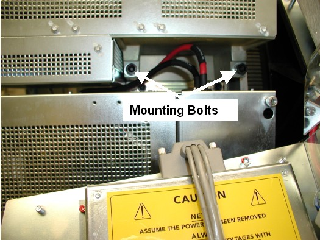

Operating Documentation
Direction 5307452-8EN, Rev# 4
Discovery CT750 HD Service Methods - Adv
Operating Documentation |
| Required Persons | Preliminary Reqs | Procedure | Finalization |
|---|---|---|---|
| 1 | Timing Not Applicable | 1 hour | 1 hour |
This document provides the necessary steps to replace and configure the Generator Auxiliary Box for imaging.
| Last Revised: | 21 October 2008 |
| Item | Qty | Effectivity | Part# | Manufacturer | |
|---|---|---|---|---|---|
| Torque Wrench Set (Must order from the tool depot. The field torque kit does not have the capacity required for the balance weight fasteners.) | 1 | - | 46-268445G1 | - | |
| Deep-well socket ½" drive | 1 | - | Part of Balance Kit | - | |
| 1/2” drive torque wrench | 1 | - | 46-268521G1 or equivalent | - | |
| Item | Qty | Effectivity | Part# | Manufacturer |
|---|---|---|---|---|
| Loctite 242 (Blue) | 1 | - | - | - |
| Ty-Raps® | - | - | - |
| Item | Qty | Effectivity | Part# | Manufacturer | |
|---|---|---|---|---|---|
| Generator Auxiliary Box | 1 | - | See IPL | See IPL | |
| POTENTIAL FOR ELECTRIC SHOCK | |
| VOLTAGES MAY BE PRESENT | |
| USE PROPER LOCKOUT/TAGOUT PROCEDURES BEFORE REPLACING COMPONENTS. |
| Follow ALL required safety and PPE procedures customary for your organization when working on this product. | |
| Condition | Reference | Eff |
|---|---|---|
Recommend procedure completion by GE trained service personnel. | - | - |
Move table to home position.
Remove right side gantry cover.
Turn OFF [HVDC ENABLE] , [AXIAL DRIVE ENABLE] , and [120 VAC] switches on Service Switch panel.
Remove scan window
Remove gantry left side, top, and front covers.
Rotate gantry such that Auxiliary Box is in the 1 o'clock position.
Engage rotational lock.
Cut Ty-Raps on Inverter and Auxiliary Box clamps.
Loosen High Voltage cable locking ring with spanner wrench.
Remove High Voltage cable candlestick and place a cover over candlestick.
Place a cap or paper towel in top of receptacle to prevent oil spillage and dirt from contaminating receptacle.
Remove High Voltage cable clamps from front and top of Auxiliary Box.
| NOTE: | Since this is not part of the Auxiliary Box assembly, you must keep the hardware. |
Disconnect all wire connectors from the Auxiliary Box.
| NOTE: | Keep any fasteners associated with the wiring. |
Remove two M12 mounting bolts on Auxiliary bracket holding assembly to gantry. Take bolts and washer out to ease removal.
| NOTE: | If bolts are supplied with new Auxiliary Box, throw away old bolts and washers. |
| NOTE: | If bolts are not supplied with the new Auxiliary Box, reuse existing bolts and washers. Make certain to thoroughly clean all dried Loctite from the bolts. |
Illustration 1: Auxiliary Box Mounting Bolts

Remove Auxiliary Box by lifting up and pulling out.
Slide new Auxiliary Box in and down over the Inverter mounting bracket. Route HVDC wires between Auxiliary Box and Inverter. Use the slots on Auxiliary Box chassis to place on gantry.
Fasten new Auxiliary Box with new M12 mounting bolts and washers, as well as blue Loctite (242).
| NOTE: | If bolts are not supplied with the new Auxiliary Box, reuse existing bolts and washers. Make certain to thoroughly clean all dried Loctite from the bolts and apply new blue Loctite (242). |
Torque each M12 mounting bolt to the following specification.
| 49 ft-lbs | 66 N-m | 590 in-lbs | 680 kg-cm |
Reattach High Voltage cable clamps to front and top of Auxiliary Box.
Reconnect all wire connections to Auxiliary Box.
| NOTE: | Ty-Rap every bracket and clamp. |
Perform Securing HV Cable.
Disengage rotational lock.
Turn ON [HVDC ENABLE] , [AXIAL DRIVE ENABLE] , and [120 VAC] switches on Service Switch panel.
Press [ESTOP RESET] on Service Switch panel and wait until scan hardware is reset.
Turn OFF [HVDC ENABLE] , [AXIAL DRIVE ENABLE] , and [120 VAC] switches on Service Switch panel.
Install gantry left side, top, and front covers.
Install scan window.
Turn ON [HVDC ENABLE] , [AXIAL DRIVE ENABLE] , and [120 VAC] switches on Service Switch panel.
Press [ESTOP RESET] on Service Switch panel and wait until scan hardware is reset.
Install right side gantry cover.
Save System State (See System State Save Restore.)